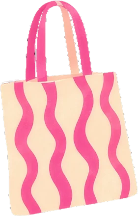
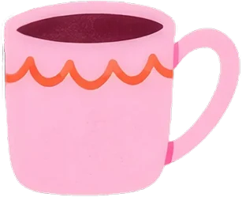
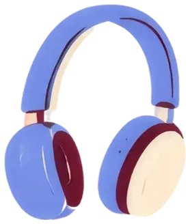
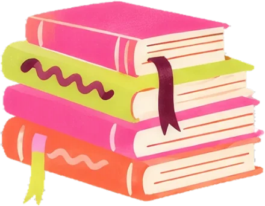

Oficina
Receitas prontas por peça: como juntar cor, letra, logo e elementos para cada coisa que a gente faz. O manual diz o que cada decisão é; aqui se vê funcionando.

Kit de Natal 6 testes
Ecobag, 3 marca-páginas, cartela de adesivos e caneca.
Combinações de cor do logo no manual
18 combinações com contraste, na aba Logo do Manual.

Post de feed 3 receitas
Exemplo real e três receitas com prompt.

Stories e capas 2 receitas
Enquete e aviso rápido, em 9:16.
Receitas de colagem receita
As seis camadas, na ordem certa.

Famílias de layout proposta
Sete jeitos de montar um post, com prompt para cada um.
Como gerar as artes proposta
Claude, ChatGPT e Canva: qual usar e como montar o Projeto.